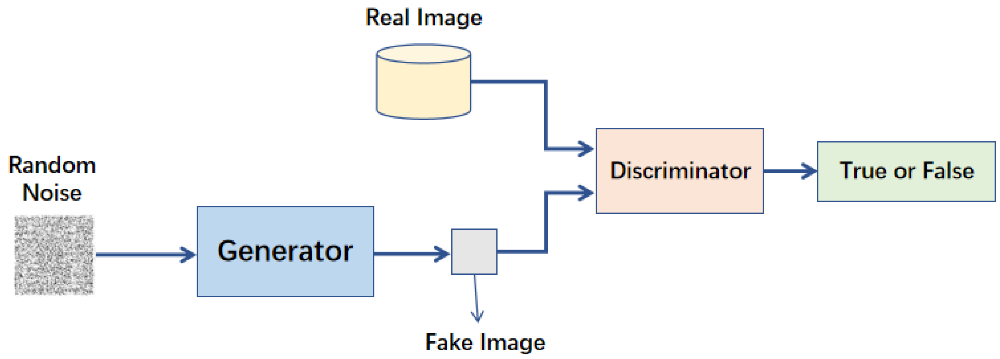
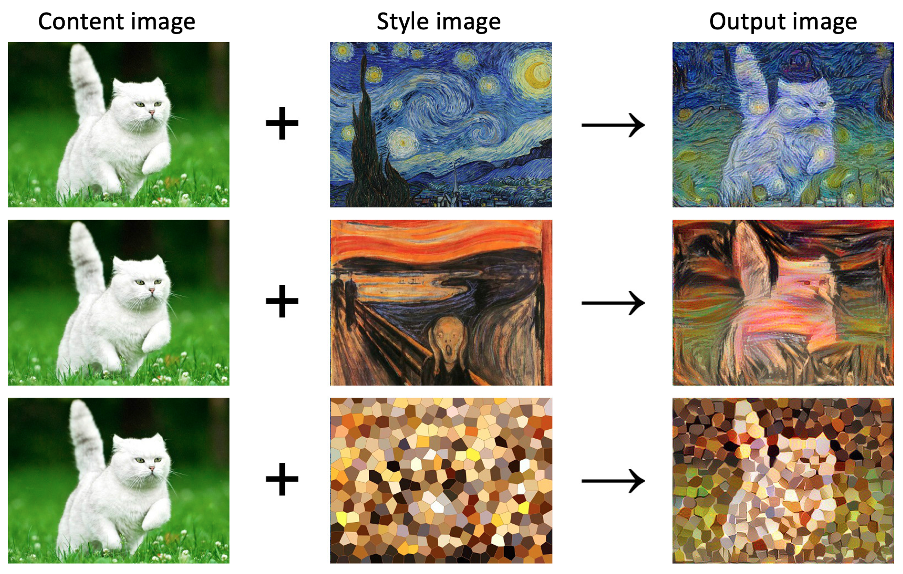
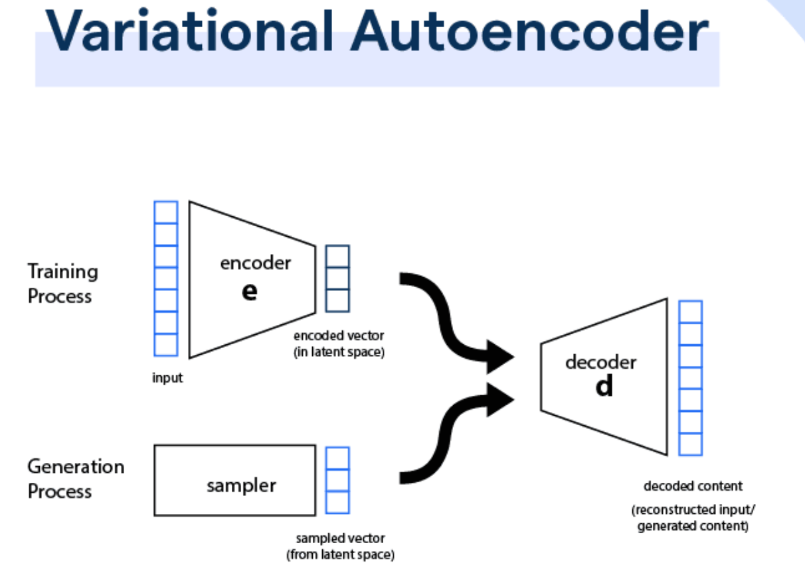

在訓練鑑別式 AI模型（例如用於自動駕駛的物體偵測模型）時，使用生成式 AI（如 GAN）生成合成數據（Synthetic Data）的主要目的是什麼？
B
補充真實世界數據的不足或多樣性，提升鑑別式模型的穩健性
生成式 AI，特別是GAN (Generative Adversarial Network)，可以創造出逼真的合成數據。當真實世界的訓練數據難以取得、成本高昂、或缺乏某些罕見但重要的場景（例如惡劣天氣下的駕駛狀況）時，這些合成數據就能派上用場。透過將合成數據加入訓練集（資料增強 Data Augmentation 的一種形式），可以增加數據的多樣性，讓鑑別式模型學習到更廣泛的模式，從而提高其在真實世界應用中的穩健性（Robustness）和泛化能力（Generalization）。這是一種典型的鑑別式 AI 與生成式 AI 整合應用。選項 A 不正確，生成式 AI 是輔助訓練，而非取代。選項 C 是鑑別器在 GAN 內部的工作，而非生成合成數據的主要目的。選項 D 生成數據本身也需要成本，其主要目的是提升鑑別式模型，而非降低生成式模型成本。
生成對抗網路（GAN, Generative Adversarial Network）是由哪兩個主要部分組成的？
A
編碼器（Encoder）和解碼器（Decoder）
B
卷積層（Convolutional Layer）和池化層（Pooling Layer）
C
生成器（Generator）和判別器（Discriminator）
D
循環單元（Recurrent Unit）和注意力機制（Attention Mechanism）
生成對抗網路（GAN）的核心架構包含兩個相互競爭的神經網路：生成器（Generator）和判別器（Discriminator）。生成器負責學習真實數據的分佈並嘗試生成新的、看起來真實的數據樣本（例如圖像）。判別器則像一個裁判，負責判斷輸入的數據樣本是來自真實數據集還是由生成器生成的假數據。兩者透過對抗式學習（Adversarial Learning）過程互相改進，生成器努力欺騙判別器，而判別器努力辨別真偽，最終目標是讓生成器能夠生成非常逼真的數據。編碼器和解碼器是自編碼器（Autoencoder）或變分自編碼器（VAE）的組成部分。卷積層和池化層是CNN的核心。循環單元和注意力機制分別是RNN和Transformer模型的核心。

在 GAN 的訓練過程中，生成器 (Generator) 的目標是什麼？
A
最大化判別器 (Discriminator) 判斷其生成數據為真實數據的機率
B
最小化判別器 (Discriminator) 判斷其生成數據為真實數據的機率
D
學習輸入數據的潛在表示 (Latent Representation)
在GAN的對抗式學習過程中，生成器 (Generator) 的任務是學習真實數據的分佈，並生成盡可能逼真的假數據，其最終目標是「欺騙」判別器 (Discriminator)，讓判別器無法分辨出哪些數據是由生成器生成的。因此，生成器會努力最大化判別器將其生成的數據誤判為真實數據的機率。相對地，判別器的目標則是盡可能準確地區分真實數據與生成數據（選項 C 是判別器的目標）。學習潛在表示是自編碼器 (Autoencoder) 等模型的目標。
下列哪一項任務最適合使用鑑別式 AI (Discriminative AI) 模型來完成？
鑑別式 AI 模型的核心功能是學習數據點之間的決策邊界（Decision Boundary），並根據輸入數據預測其屬於哪個類別。判斷電子郵件是否為垃圾郵件是一個典型的二元分類（Binary Classification）問題，目標是將郵件區分為「垃圾」或「非垃圾」兩類，這正是鑑別式 AI（如支持向量機 SVM, 邏輯回歸 Logistic Regression, 或用於分類的神經網路）所擅長的。選項 B、C、D 都是生成新內容的任務（圖像、音樂、遊戲地圖），這些更適合使用生成式 AI (Generative AI) 模型（如 GAN, VAE, 擴散模型 Diffusion Model）來完成。
在電腦視覺 (Computer Vision) 領域中，若要根據一張現有照片生成具有不同藝術風格（例如梵谷風格）的版本，較適合使用哪種類型的 AI 技術？
A
純粹的物件偵測 (Object Detection) 模型
B
純粹的影像分類 (Image Classification) 模型
C
以生成式 AI 為基礎的風格轉換 (Style Transfer) 技術
D
純粹的影像分割 (Image Segmentation) 模型
風格轉換 (Style Transfer) 是一種典型的生成式 AI 應用，其目標是將一張內容圖像（Content Image）的視覺內容與另一張風格圖像（Style Image）的藝術風格結合起來，生成一張新的、具有內容圖像結構和風格圖像紋理/色彩的圖像。這通常利用深度學習，特別是基於CNN特徵提取和GAN等生成技術來實現。物件偵測、影像分類和影像分割都屬於鑑別式 AI 的範疇，它們分別專注於識別圖像中的物體位置、判斷圖像屬於哪個類別、以及將圖像劃分成不同的語義區域，而不是生成具有新風格的圖像。

在語音辨識 (Speech Recognition) 領域，區分鑑別式 AI 和生成式 AI 的應用，下列何者敘述最為恰當？
A
鑑別式 AI 用於將語音轉換為文字（語音轉文字, Speech-to-Text），生成式 AI 用於生成聽起來自然的語音（文字轉語音, Text-to-Speech）
B
生成式 AI 用於將語音轉換為文字，鑑別式 AI 用於生成聽起來自然的語音
語音轉文字 (Speech-to-Text, STT) 的核心任務是理解輸入的語音訊號並將其轉換（或分類）為對應的文字序列，這是一個典型的鑑別式任務（或序列預測任務，但本質上是從語音特徵映射到文字類別）。而文字轉語音 (Text-to-Speech, TTS) 或語音合成 (Speech Synthesis) 的目標是根據輸入的文字生成聽起來自然流暢的語音波形，這是一個典型的生成式任務。因此，選項 A 最能恰當地描述兩者在語音辨識領域的主要應用區別。
資料增強 (Data Augmentation) 技術中，除了傳統的旋轉、縮放、裁剪等方法外，利用生成式 AI (例如 GAN) 進行資料增強的主要優勢是什麼？
B
能夠生成更多樣化且更接近真實數據分佈的新樣本，而不僅是現有數據的簡單變換
傳統的資料增強方法（如旋轉、平移、變色等）是在現有數據基礎上進行幾何或顏色變換，增加的數據多樣性有限。而生成式 AI，特別是 GAN，能夠學習到真實數據的內在分佈，從而生成全新的、但風格與真實數據相似的樣本。這些生成的樣本可以涵蓋更廣泛的變化，甚至是一些真實數據中未出現但可能存在的樣貌，因此能提供更高質量和更多樣性的數據來增強訓練集，有助於提高模型的泛化能力。生成的數據不一定更清晰（選項 A）；生成式方法通常計算成本較高，不一定更快（選項 C）；生成式 AI 仍需要基於原始數據學習其分佈（選項 D）。
哪種情境是鑑別式 AI 與生成式 AI 整合應用的典型例子，其中一個模型生成內容，另一個模型評估或分類該內容？
D
使用決策樹 (Decision Tree) 進行客戶流失預測
生成對抗網路 (GAN) 的核心就是由生成器（生成式 AI）和判別器（鑑別式 AI）組成的。生成器負責生成數據，而判別器負責評估（區分）這些數據是真實的還是生成的。這種生成與鑑別相互對抗、共同進步的機制，正是鑑別式 AI 與生成式 AI 整合應用的經典範例。其他選項：RNN 進行時間序列預測主要是序列建模；CNN 進行圖像分類是純粹的鑑別式任務；決策樹進行預測也是鑑別式（或稱為預測性）任務。
在醫療影像分析中，如果需要自動檢測 X 光片中是否存在腫瘤（分類問題），但同時又希望生成更多樣的正常 X 光片以供醫生參考或訓練模型，這會涉及到哪兩種 AI 技術的結合？
A
鑑別式 AI（用於檢測）和生成式 AI（用於生成）
D
強化學習（Reinforcement Learning）和監督式學習（Supervised Learning）
這個情境包含兩個不同的任務：1) 檢測腫瘤：判斷影像中是否包含特定模式（腫瘤），這是一個分類或偵測問題，屬於鑑別式 AI 的範疇。2) 生成正常的 X 光片：創造新的、看起來真實的影像數據，這是一個生成任務，屬於生成式 AI 的範疇。因此，這個應用場景需要結合鑑別式 AI 和生成式 AI 兩種技術來分別完成不同的目標。
哪項技術結合了生成式模型來學習數據的正常模式，並利用鑑別式的思路來檢測偏離正常模式的異常數據？
C
使用 GAN 或 VAE 進行異常檢測 (Anomaly Detection)
利用生成式模型進行異常檢測是一種常見的方法。GAN 或 VAE (Variational Autoencoder) 等模型可以被訓練來學習正常數據的分佈或重建正常數據。當輸入異常數據時，生成器可能無法生成逼真的假數據，或者判別器/重建誤差會顯著增大。這種偏離正常模式的表現就可以被用來識別異常。這個過程中，生成式模型學習了「正常」是什麼樣子，而判斷是否偏離正常則體現了鑑別式的思路。其他選項中，CNN 主要用於特徵提取或分類；K-Means 是非監督聚類；RNN 主要用於序列數據。
以下關於鑑別式 AI與生成式 AI的描述，何者錯誤？
A
鑑別式 AI 學習 P(y|x)，即給定輸入 x，輸出 y 的條件機率。
B
生成式 AI 學習 P(x, y) 或 P(x)，即數據的聯合分佈或邊緣分佈。
C
生成式 AI 通常比鑑別式 AI 需要更少的訓練數據。
鑑別式模型學習的是輸入與輸出之間的條件機率 P(y|x)，直接對決策邊界建模，常用於分類或回歸。 生成式模型學習的是數據本身的分佈 P(x) 或聯合分佈 P(x,y)，能夠生成新的數據樣本。由於生成式模型需要學習數據的完整分佈，通常需要更多樣且大量的數據才能達到好的效果，尤其是在生成高維度數據（如圖像）時。因此，選項 C 的說法是錯誤的。選項 D 正確，GAN 的判別器就是在做二元分類（判斷真假），是一個鑑別式模型。
在自然語言處理 (NLP, Natural Language Processing) 中，哪項任務更傾向於使用生成式 AI？
A
情感分析 (Sentiment Analysis)
B
命名實體識別 (Named Entity Recognition)
C
文本摘要生成 (Text Summarization)
D
文本分類 (Text Classification)
情感分析、命名實體識別、文本分類都屬於從現有文本中提取資訊或判斷類別的任務，是典型的鑑別式NLP任務。而文本摘要生成需要模型理解原文主旨並生成一段新的、較短的文字來概括原文，這個「生成新文本」的過程屬於生成式 AI 的範疇。其他如機器翻譯、對話系統、故事創作等也常用到生成式NLP技術。
變分自編碼器 (VAE, Variational Autoencoder) 與 GAN 同為常見的生成式模型，VAE 的主要運作原理是基於什麼？
A
學習將輸入數據編碼到一個潛在空間分佈，再從該分佈採樣解碼回數據空間
VAE 是一種基於自編碼器 (Autoencoder) 架構的生成式模型。它的核心思想是學習一個從輸入數據空間到潛在空間 (Latent Space) 的概率性編碼（通常假設為高斯分佈），然後從這個學到的潛在分佈中採樣一個點，再透過解碼器將其映射回原始數據空間，從而生成新的數據樣本。它不像 GAN 那樣有明確的對抗過程（選項 B），也不是擴散模型 (Diffusion Model) 的加噪去噪過程（選項 C）。VAE 優化的是證據下界 (Evidence Lower Bound, ELBO)，間接優化似然性，而非直接最大化（選項 D）。

近年來在圖像生成領域取得極佳效果的擴散模型 (Diffusion Model)，其基本的生成過程涉及哪兩個主要階段？
C
前向加噪 (Forward Diffusion/Noising) 與反向去噪 (Reverse Diffusion/Denoising)
擴散模型的運作包含兩個核心過程：1) 前向過程（加噪）：逐步對真實數據樣本添加高斯噪聲，直到數據變成完全的噪聲。這個過程通常是固定的、不可學習的。2) 反向過程（去噪）：模型學習從純噪聲開始，逐步地、迭代地去除噪聲，最終恢復（生成）出一個清晰的數據樣本。這個去噪過程是模型需要學習的關鍵部分。編碼解碼是 VAE/自編碼器的概念，生成判別是 GAN 的概念，特徵提取分類是鑑別式模型的概念。

在電腦視覺中，利用生成式 AI 將低解析度圖片轉換為高解析度圖片的技術稱為什麼？
A
圖像修復 (Image Inpainting)
B
超解析度 (Super-Resolution)
超解析度 (Super-Resolution, SR) 技術的目標是從一張或多張低解析度 (Low-Resolution, LR) 圖像中恢復或生成對應的高解析度 (High-Resolution, HR) 圖像。生成式 AI 模型（特別是基於 GAN 或擴散模型的 SR 方法）在這方面表現出色，因為它們能夠學習並「幻想」出低解析度圖像中缺失的高頻細節，從而生成更清晰、更細膩的高解析度結果。圖像修復是填補圖像缺失部分；風格轉換是改變圖像風格；圖像去噪是去除圖像噪聲。
使用生成式 AI 來自動填補圖像中缺失或損壞的部分（例如移除照片中的某個人物並補全背景），這種技術稱為？
A
圖像修復 (Image Inpainting)
B
超解析度 (Super-Resolution)
C
語義分割 (Semantic Segmentation)
D
物體偵測 (Object Detection)
圖像修復 (Image Inpainting) 或圖像補全 (Image Completion) 是指利用圖像中已知區域的資訊，來推斷並填補缺失或損壞區域的內容，使其看起來自然且與周圍環境協調。生成式 AI 模型，特別是深度生成模型，能夠學習圖像的結構和紋理，從而生成逼真的內容來填補缺失部分。超解析度是提高解析度；語義分割和物體偵測是鑑別式任務，分別用於像素級分類和物體定位。
在訓練GAN時，有時會遇到生成器只產生非常有限種類的樣本，而判別器無法有效引導其改進的情況，這種現象被稱為什麼？
A
梯度消失 (Vanishing Gradient)
模式崩潰 (Mode Collapse) 是訓練GAN時常見的問題之一。它指的是生成器 (Generator) 只學會生成數據分佈中的少數幾種模式（或甚至只有一種）的樣本，而忽略了其他模式，導致生成結果缺乏多樣性。即使這些生成的樣本可能很逼真，能夠騙過判別器，但它們無法代表真實數據的完整分佈。梯度消失是深度網路訓練中的普遍問題；過度擬合和欠擬合描述的是模型對訓練數據和新數據的泛化能力。
下列哪種應用場景不適合直接使用生成式 AI 作為主要的解決方案？
根據歷史數據預測未來的數值（如銷售額）是一個典型的回歸 (Regression) 或時間序列預測 (Time Series Forecasting) 問題，這通常使用鑑別式模型（或傳統統計模型如 ARIMA）來完成，目標是學習輸入（歷史數據）到輸出（未來數值）的映射關係。而選項 A、C、D 都是關於創造新內容（文案、音樂、風格化圖像）的任務，更適合使用生成式 AI。
在鑑別式 AI和生成式 AI的整合應用中，有時會先用生成式 AI產生大量候選方案（例如藥物分子結構），再用鑑別式 AI評估這些方案的有效性或特性。這種模式的優點是什麼？
A
可以探索更廣闊的解決方案空間，並快速篩選出有潛力的候選者
這種「生成+評估」的模式結合了兩類 AI 的優勢。生成式 AI 能夠基於學習到的模式創造出大量新穎的候選方案，有效擴大了探索範圍。而鑑別式 AI（或物理模擬、專家規則等評估方法）則可以快速地對這些候選方案進行評分或篩選，找出最有潛力、最符合目標的方案進行後續研究或實驗。這種方式比傳統的窮舉搜索或隨機搜索更有效率。但它不保證找到全局最優解（選項 B），通常仍需專家確認（選項 C），且對鑑別式 AI 的要求可能更高（需要準確評估大量可能從未見過的樣本）（選項 D）。
深度偽造 (Deepfake) 技術主要是利用了哪一類 AI 模型來生成逼真但虛假的影像或語音？
D
強化學習 (Reinforcement Learning)
深度偽造 (Deepfake) 技術的核心就是生成虛假的、但看起來或聽起來非常真實的媒體內容（如人臉替換視頻、聲音模仿）。這類任務需要模型能夠學習數據的複雜分佈並創造新的、逼真的樣本，正是生成式 AI 模型（特別是GAN 和自編碼器及其變體）所擅長的領域。例如，通過訓練可以將一個人的面部表情遷移到另一個人的臉上。SVM 和決策樹是傳統的鑑別式機器學習方法。強化學習主要用於決策制定。
在語音辨識應用中，若要將一段特定人士的語音轉換成另一位特定人士的聲音風格（聲音轉換 Voice Conversion），同時保留原始語音內容，這更偏向於哪種 AI 技術的應用？
B
純粹的說話者識別 (Speaker Recognition)
C
生成式 AI（例如基於 GAN 或 VAE 的模型）
D
純粹的語音情感分析 (Speech Emotion Analysis)
聲音轉換 (Voice Conversion) 的目標是在保留語音內容（說了什麼）不變的情況下，轉換語音的音色、音調、韻律等，使其聽起來像目標說話者的聲音。這個過程涉及到解耦語音內容和說話者風格，並重新生成具有目標風格的語音波形，是生成式 AI 的一個重要應用方向。其他選項中，STT 是轉錄內容；說話者識別是判斷是誰在說話；語音情感分析是判斷語音中的情感，這些都不是生成新語音風格。
相較於 GAN，VAE 在生成數據時通常具有什麼特點？
GAN 由於其對抗式訓練機制，容易出現訓練不穩定、模式崩潰等問題，但生成的樣本（尤其是圖像）通常比較清晰銳利。VAE 的訓練過程是基於優化 ELBO，相對來說更加穩定，不容易發生模式崩潰，並且能提供一個結構化的潛在空間。然而，由於其損失函數中包含重建誤差項（通常是像素級的 L1 或 L2 損失），生成的圖像可能相對模糊一些（選項 A 錯誤）。VAE 包含編碼器（選項 C 錯誤）。兩者對數據量的需求取決於具體任務和數據複雜度，沒有絕對的比較（選項 D 錯誤）。
當我們需要 AI 根據不完整的句子預測或生成最可能的下一個詞時，主要應用了哪種 AI 技術的原理？
B
序列生成（常基於 RNN, LSTM 或 Transformer）
預測或生成序列中的下一個元素（例如文本中的下一個詞、時間序列中的下一個值）是序列生成 (Sequence Generation) 或序列預測 (Sequence Prediction) 的核心任務。這類任務通常利用能夠處理序列數據的模型，如遞迴神經網路 (RNN)、長短期記憶網路 (LSTM)、閘控循環單元 (GRU) 或現代的 Transformer 模型。這些模型可以捕捉序列中的時間依賴性或上下文關係，並預測接下來最可能出現的元素。雖然這本質上是預測下一個詞的概率分佈（鑑別式），但連續生成多個詞就構成了文本生成（生成式）。
與鑑別式 AI 相比，生成式 AI 模型通常更關注數據的哪個方面？
鑑別式 AI 的主要目標是學習如何區分不同的數據類別或預測一個數值，它專注於學習決策邊界。而生成式 AI 的目標是理解數據是如何生成的，即學習數據的底層概率分佈或數據的內在結構。通過學習這個分佈，生成式模型才能夠創造出與原始數據相似的新樣本。因此，生成式 AI 更關注數據的潛在分佈和結構。
在工業應用中，利用鑑別式 AI 進行產品瑕疵檢測後，若希望能生成「理想」無瑕疵產品的圖像作為品質參考標準，此整合應用是利用了生成式 AI 的何種能力？
瑕疵檢測本身是鑑別式 AI 的任務（分類或異常檢測）。而生成理想無瑕疵產品的圖像，則是創造新的、符合特定標準（無瑕疵）的數據樣本，這正是生成式 AI 的核心能力——數據生成與合成。透過學習大量正常產品的圖像特徵，生成式模型可以合成出代表「理想狀態」的圖像。
為何生成式 AI (如大型語言模型 LLM) 在處理需要精確事實或避免幻覺 (Hallucination) 的任務時，常需要與檢索系統 (Retrieval System) 整合 (如 RAG, Retrieval-Augmented Generation)？
B
為了提供模型外部的、可靠的知識來源，以提高回應的準確性和真實性
生成式 AI（特別是 LLM）雖然能生成流暢的文本，但其知識主要來自於訓練數據，可能過時或不準確，且有時會產生幻覺（捏造事實）。RAG 技術通過結合一個檢索器（Retriever）和一個生成器（Generator），先從外部知識庫（如文檔、數據庫）檢索與問題相關的最新、最可靠的信息，然後將這些信息提供給生成器作為上下文，讓生成器在此基礎上生成回答。這樣可以有效減少幻覺，提高回應的事實準確性和時效性。這也是一種鑑別式（檢索相關性）與生成式整合的應用。
在推薦系統中，如果使用生成式模型來生成用戶可能感興趣的新物品描述或推薦理由，再由鑑別式模型（或用戶反饋）來評估這些生成的內容是否吸引人，這種做法的主要目的是什麼？
B
提供更具個性化和解釋性的推薦，可能發現用戶潛在的新興趣
傳統推薦系統（如協同過濾）主要基於歷史行為預測評分或排序，可能難以解釋推薦理由或發現用戶的新興趣。生成式 AI 可以基於用戶畫像和物品信息生成個性化的描述或理由，讓推薦更具說服力和吸引力，例如生成「因為你喜歡科幻電影 A，所以你可能會喜歡這部設定相似的電影 B」。這種方式增強了推薦的可解釋性，並且透過生成可能略微超出用戶歷史範圍的內容，有機會探索和引導用戶發現新的興趣點（Serendipity）。雖然計算複雜度可能增加，且不保證絕對準確，但能提升用戶體驗。
自監督學習 (Self-supervised Learning) 有時被視為監督學習和非監督學習之間的一種形式，它與生成式模型的關係是？
B
許多生成式模型的訓練過程利用了自監督學習的代理任務 (Pretext Task) 來學習數據表示。
C
自監督學習主要用於訓練鑑別式模型，與生成式模型無關。
自監督學習的核心思想是從無標籤數據中自動生成標籤或監督信號，並以此來訓練模型學習數據的表示。許多生成式模型，特別是像 BERT, GPT 這類基於 Transformer 的大型語言模型，其預訓練 (Pre-training) 過程就是典型的自監督學習。例如，遮罩語言模型 (Masked Language Model, MLM) 任務（預測被遮罩的詞）或下一個句子預測 (Next Sentence Prediction, NSP) 任務，都是從數據本身構造的代理任務 (Pretext Task)。透過這些任務，模型學會了豐富的語言知識和數據表示，這些表示隨後可以用於各種下游任務，包括文本生成。因此，自監督學習是訓練強大生成式模型的重要技術之一。
將生成式 AI 應用於藥物發現 (Drug Discovery) 時，常見的整合方式是？
C
使用生成式 AI 提出新的分子結構候選，再用鑑別式 AI 或其他方法預測其活性與安全性。
D
使用鑑別式 AI 生成分子結構，再用生成式 AI 預測活性。
藥物發現的目標是找到具有特定生物活性且安全的新分子。由於可能的化學空間極其巨大，傳統方法效率有限。生成式 AI（如 VAE, GAN, Flow-based models）可以學習已知分子的結構規則，並生成大量新穎的、可能具有所需特性的分子結構候選。然後，可以使用鑑別式 AI 模型（或其他計算方法，如分子對接、QSAR）來預測這些候選分子的生物活性、毒性、藥代動力學性質等，從而篩選出最有希望的候選者進行後續的實驗驗證。這種「生成-預測/篩選」的整合模式是 AI 在藥物發現中的常見應用。
在評估生成式模型（尤其是圖像生成）的性能時，除了人眼主觀判斷外，常用的客觀量化指標有哪些？
A
準確率 (Accuracy) 和 精確率 (Precision)
B
均方誤差 (MSE) 和 R 平方 (R-squared)
C
初始分數 (Inception Score, IS) 和 弗雷歇初始距離 (Fréchet Inception Distance, FID)
D
交叉熵 (Cross-Entropy) 和 AUC
評估生成式模型的質量比鑑別式模型更具挑戰性，因為「好」的生成結果往往涉及主觀判斷。然而，研究者們提出了一些客觀指標。IS 主要評估生成圖像的清晰度（單個圖像的可識別性）和多樣性（不同圖像之間的差異）。FID 則通過比較生成圖像和真實圖像在 Inception 網路某個深層特徵空間中的分佈距離（通常用弗雷歇距離計算）來評估生成圖像的真實性和多樣性，FID 分數越低通常表示生成質量越好，與人類主觀評價的相關性較高。選項 A 和 D 是分類模型的指標；選項 B 是回歸模型的指標。